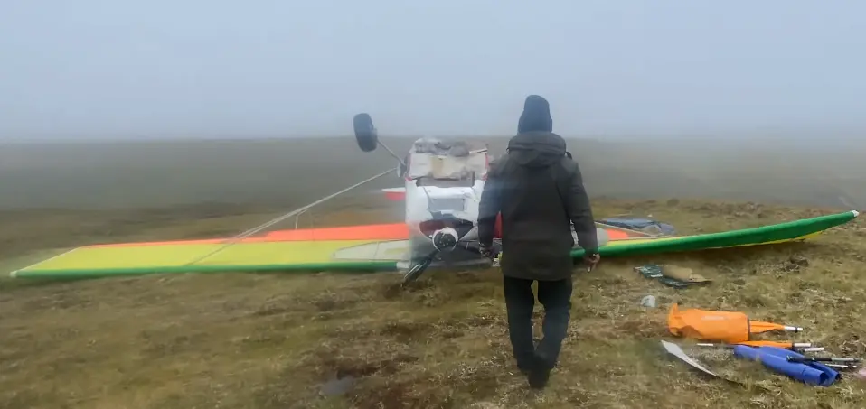

🖂 с.н.с. ИПЭЭ РАН 🖂 с.н.с. ИПЭЭ РАН
🖂 с.н.с. ИПЭЭ РАН 🖂 с.н.с. ИПЭЭ РАН Преобладающее местонахождение животных в различные сезоны года хорошо показано на картах в разделе 2 “Картирование перемещения…” , поэтому хотелось бы использовать эту информацию на практике. Представитель заказчика
Сезоны ледовой фенологии отличаются от общепринятых времен года. Так, зима в Арктике – это период максимальной протяженности ледового покрова, весна – период ледотаяния, лето – период минимальной протяженности ледового покрова, осень – период ледообразования. Обычно максимальная протяженность льда достигается в марте, а миниальная – в сентябре. При исследованиях белого медведя обычно классифицируют сезоны по периодам ледовой фенологии, а не по временам года.
В северных широтах высокая изменчивость продолжительности светового дня в зависимости от времени года – от полярного дня до полярной ночи. По нашему многолетнему опыту даже за несколько минут до наступления заката солнца освещенности может быть недостаточно для проведения полноценных наблюдений, особенно при наличии облачности, уменьшающей освещенность.
Таким образом, с начала ноября по конец февраля проведение авиаучетов затруднено. Этот период соответствует сезону ледообразования, когда происходит достаточно быстрая смена возрастных категорий льда от ниласа до молодого. В этот период эффективность наблюдений при учетных работах повышается за счет отсутствия торосов. В начале периода ледообразования возможно возникновения идеального условия наличия снежного покрова после первого выпадения снега, что позволяет исследовать следовую активность животных. Однако, использовать этот период для авиаучета можно лишь в умеренных полярных широтах при наличии пункта базирования летательного средства (полоса, вертолётная площадка судна ледового класса, площадка для посадки БПЛА).

Применение сверхмалой авиации для авиучетов имеет ряд особенностей, связанных с работой для эффективного решения задач при отсутствии должной инфраструктуры. Для авиаучетов может применяться тоннажная авиация, обеспечивающая умереное покрытие исследуемой территории за счет более протяженность маршрутов, чем при использовании малой авиации, но требующая аэродромного обслуживая.Сеть ВПП в полярных регионах нерегулярная и редкая. Некоторые ВПП имеют грунтовое покрытие, делающих их непригодными для эксплуатации в период с мая по ноябрь. Некоторые ВПП находятся в подчинении Минобороны и ФСБ России, что подразумевает проведение дополнительных согласований по использованию их в гражданских целях.
Летний учет побережья не сможет дать оценку численности, так как часть белых медведей остается на льду, кромка которого далеко от суши. Поэтому наобходимо закладывать маршруты как над кромкой льда, так при определенном удалении от кромки льда. Также существуют предпосылки ухода животных вглубь суши, подтверждающиеся наблюдениями, поэтому при исследованиях материковой части стоимость авиаучета возрастает за счет увеличения маршрутной сети. На наш взгляд, летний учет может быть применен для МСОП субпопуляции Баренцева моря, являющейся частью карско-баренцевоморской популяции по КК РФ.
Распределение морского льда по состоянию на 18 августа 2020 г. Нанесено несколько действующих аэропортов, от которых отмечены участки в пределах 550 км
В Баренцевом море летний учет проводился в 2004 г. (Aars et al., 2009). В 2014 г. предполагался повторный учет 2015 г. с использованием российских средств и силами российских специалистов для россйской части Баранцева моря, и норвежцами – для норвержской части, который был выполнен лишь норвежской стороной (Aars et al., 2017).
Проведение авиационного учета в весенний период для акваторий, покрытых льдом, более предпочтительно для МСОП субпопуляции Карского моря. Выбор периода работ до начала активной стадии ледотаяния предопределяет период активной миграции животных за кромкой льда от насиженных мест, богатых вкусными щенками детенышей жертв.
Пример доступности акватории Карского моря с действующих аэропортов. От перспективных для базирования отмечены участки в пределах 500 км. Приведены границы МСОП субпопуляций Карского моря (Kara Sea) и Баренцева моря (Barents Sea)
Весенний период может использоваться также и для авиационного (или комплексного авиационно-наземного) учета берлог белого медведя. Количество берлог и размер выводка могут быть заложены в демографическую модель, на основании которой можно получить размер исследуемой группировки. Однако для получения релевантных оценок необходимо также иметь и другие демографические показатели, такие как выживаемость молодняка, успех размножения самок и др., которые могут быть получены при других методах исследований белого медведя, например, при отловах и мечении.
Иными словами: как можно использовать сведения о размерах индивидуальных участков белых медведей при экстраполяции численности на значительные территории? Для этого имеет смысл разработать пересчетный (поправочный, корректировочный - как угодно) коэффициент или математическую модель, которая позволить экстраполировать сведения о численности животных, полученные для небольшой территории, на значительные площади (пусть и с определенной долей погрешности / стат. ошибкой). В некоторых методиках учета численности охотничьих животных такой подход реализован и неплохо работает. Для подготовки этих предложений можно использовать данные учета белого медведя, полученные в рамках НИР в 2018 г.
Полученные оценки об индивидуальных участках могут быть использованы для выявления периодов относительной оседлости (низкой активности) белых медведей, чтобы минимизировать учеты в период целенаправленного перемещения (миграции) белых медведей за кромкой льда. Это будет способствовать уменьшению вероятности повторного обнаружения животных. Для определение периодов оседлости можно также использовать непараметрическую сегментацию (Lavielle, 1999; Lavielle, 2005) по среднесуточному смещению. Илья Николаевич, это то, что ты удалил из исходного отчёта, а ссылки на источники оставил
Для оценки численности белого медведя не используются методы зимнего маршрутного учета численности охотничьих животных, поэтому невозможно оценить пересчетный коэффиециент для экстраполяции данных выборочного учета на значительные территории.
Для оценки численности белого медведя на обширных территориях применяют метод линейных трансект. Эта методика использована для оценок субпопуляций Баренцева моря (Aars et al., 2009; Aars et al., 2017), Чукотского моря (Evans et al., 2003; Черноок и др., 2017), бассейна Фокса (Stapleton et al., 2016), запада залива Гуздзона (Stapleton et al., 2014), юга залива Гудзона (Obbard et al., 2015, 2018). Во время авиаучета полоса обзора фиксированная, и все животные, не попадающие в полосу исследования, не учитываются. Для каждого встреченного белого медведя отмечается расстояние от подсамолетного следа, и эти данные анализируются в программах, специально разработанных для этих целей (Buckland et al., 1993) или применяемых с обоснованными пересчетными коэффициентами (учет численности учета 2016 г. в Чукотском море на основе (Челинцев, 2014)).
Точность оценки численности белого медведя зависит от плотности встреченных особей и количества наблюдений. Разработаны методики, помогающие спроектировать учетные работы (Wiig and Derocher, 1999) и оценить ожидаемый разброс значений численности (Nielson et al., 2012).
Поскольку при учетах не избежать разнородных сред (суша, типы льда, близость кромки льда), для экстраполяции могут использоваться оцененные плотности, соответствующие каждой среде отдельно. Для белого медведя разработана циркупмолярная модель использования ресурсов (Durner et al., 2009) при нахождении особей на льду, основанная на сезонах ледовой фенологии, для которой определны ключевые абиотиеческие параметры местообитаний: квадратическое распределение концентрации льда для выделения коридора высокой концентрации льда, но не сплоченного льда, расстояния до кромки льда, глубины моря, расстояние до береговой линии. На основании предполагаемых на момент проведения авиаучета значений функции использования среды необходимо спланировать маршрут таким образом, чтобы покрытие каждой из сред было равномерным. Методика оценки численности при проведении учетных работ в гомогенной среде на основании обобщенной аддитивной модели приведена в отчете (Рожнов и др., 2018), по которой оценена численность белого медведя по кромке припайного льда на основании учетов, проведенных весной 2018 г. При получении результатов авиаучета с маршрутами через гетерогенные среды эта методика может быть применена для анализа данных и получения оценки численности.